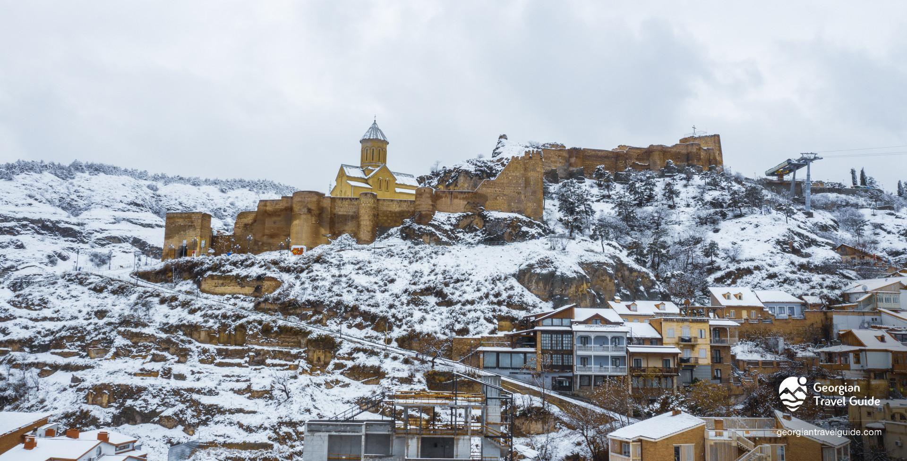
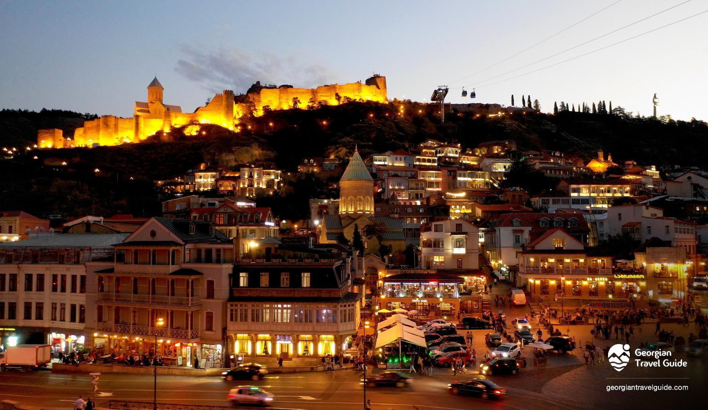

ნარიყალა
ნარიყალას ციხესიმაგრე
ნარიყალას ციხესიმაგრე დღეისათვის ყველაზე პოპულარული ადგილია როგორც ადგილობრივებისთვის, ისე ტურისტებისთვის. შეიძლება ითქვას, რომ თბილისი ნარიყალას გარეშე თავის თვითმყოფადობას ვერ შეინარჩუნებდა, ძველი თბილისის სიამაყე ნამდვილად იმსახურებს ამ ყურადღებას. ნარიყალას ციხესიმაგრე თითქმის თბილისის ყველა მხრიდან ჩანს, განსაკუთრებით მშვენიერია ღამით. ის გადაჰყურებს მტკვარს, რაც კიდევ უფრო მეტ ხიბლს მატებს გარემოს. ის მოქცეულია თბილისის ორ უმნიშვნელოვანესს ადგილს: გოგირდის აბანოებსა (ძველ თბილისში, აბანოთუბანში,) და ბოტანიკური ბაღს შორის.
ზოგიერთ წყაროში ნარიყალას ციხესიმაგრეს “შურის ციხეს” უწოდებენ. თავად ციხესიმაგრის კედლები სხვადასხვაპერიოდით თარიღდება, რომელთაგან უძველესია მეოთხე საუკუნე, როდესაც ის წარმოადგენდა სპარსთა შიდა ციხეს. კედლები, რომლებსაც მნახველი დღეს აწყდება, თარიღდება მერვე საუკუნით, როდესაც აქ მოთავსებული იყო არაბი ამირას სასახლე. ქართულ წყაროებში ამ ადგილს ხშირად მოიხსენიებდნენ აგრეთვე “დედა ციხესიმაგრედ‘. ნარიყალა მნახველს სთავაზობს განსაკუთრებულ პანორამას ქალაქისა, რომლის მსგავსსაც სხვაგან ვერ ნახავთ. ეს ადგილი წარმოადგენს თბილისის თავდაცვის ბრწყინვალე ნიმუშს. აქ ასასვლელი ორი გზა არსებობს, ორივე მათგანი წარმოუდგენლად ლამაზ თავგადასავალს გთავაზობთ: პირველ რიგში, შეგიძლიათ აქ ახვიდეთ ფეხით მეიდანიდან, განსაკუთრებით თუ თბილი საღამოა, ხოლო მეორე გზაა საბაგირო, რომელიც მდებარეობს რიყის პარკში, სადაც არაერთი გასართობით შეგიძლიათ თავის შექცევა, როგორებიცაა: მეგა ჭადრაკი, მოცეკვავე და მომღერალი შადრევნები, ლაბირინთები და წყნარი, მყუდრო კუთხეები...

ასევე, ძალიან მნიშვნელოვანია წმ.ნიკოლოზის ტაძარი, რომელიც შიგნიდან მთლიანად მოხატულია როგორც ბიბლიური, ასევე საქართველოს ისტორიის ამსახველი ფრესკებით. საბოლოო ჯამში ვიტყვი, რომ თუ თქვენ არ გინახავთ ნარიყალას ციხესიმაგრე და მიმდებარე ტერიტორიები, არ გინახავთ თავად თბილისიც, ასე რომ აუცილებლად ესტუმრეთ მას.
ნარიყალასთან ერთად თბილისში აგრეთვე უნდა ნახოთ მეტეხი